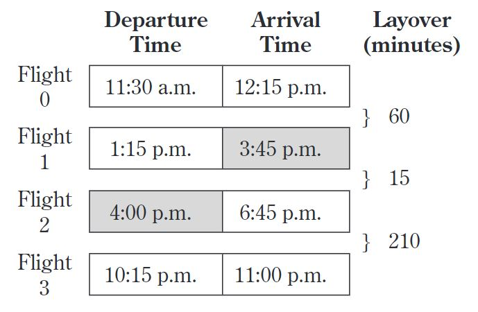
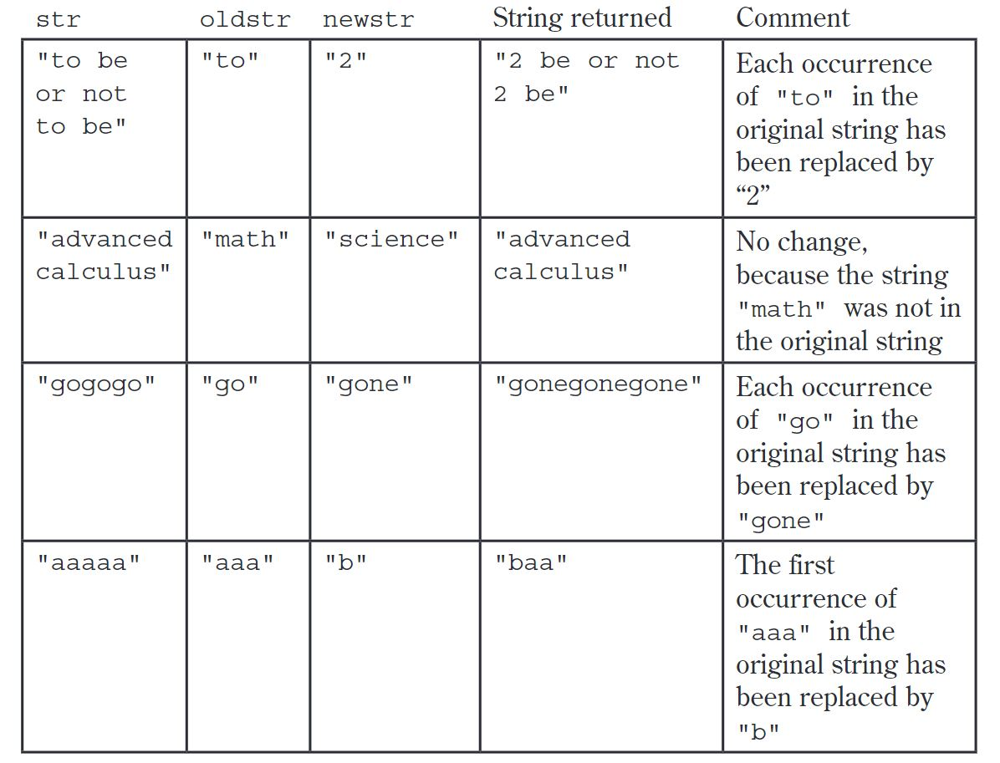
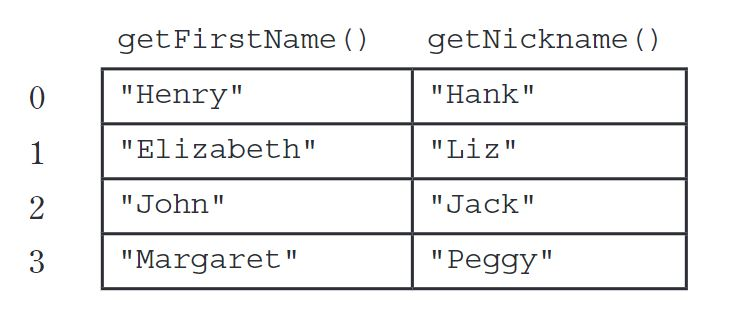
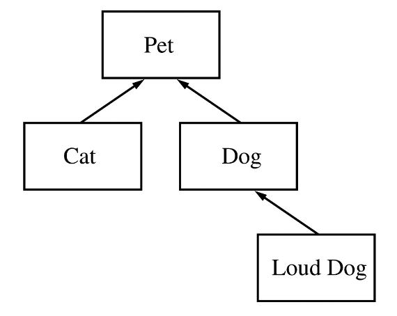
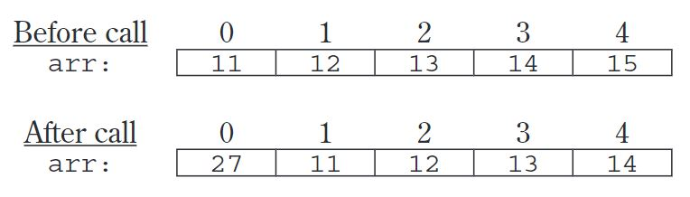
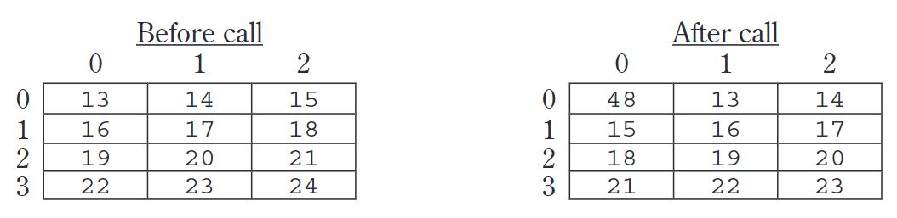

5. AP计算机示例考题：主观题
I. A travel agency maintains a list of information about airline flights. Flight information includes a departure time and an arrival time. You may assume that the two times occur on the same day. These times are represented by objects of the Time class.
The declaration for the Time class is shown below. It includes a method minutesUntil, which returns the difference (in minutes) between the current Time object and another Time object.
public class Time {
/** @return difference, in minutes, between this time and other;
* difference is negative if other is earlier than this time
*/
public int minutesUntil(Time other)
{ /* implementation not shown */ }
// There may be instance variables, constructors, and methods that are not
// shown.
}
For example, assume that t1 and t2 are Time objects where t1 represents 1:00 p.m. and t2 represents 2:15 p.m. The call t1.minutesUntil(t2) will return 75 and the call t2.minutesUntil(t1) will return -75.
The declaration for the Flight class is shown below. It has methods to access the departure time and the arrival time of a flight. You may assume that the departure time of a flight is earlier than its arrival time.
public class Flight {
/** @return time at which the flight departs
*/
public Time getDepartureTime() { /* implementation not shown */ }
/** @return time at which the flight arrives
*/
public Time getArrivalTime() { /* implementation not shown */ }
// There may be instance variables, constructors, and methods that are not shown.
}
A trip consists of a sequence of flights and is represented by the Trip class. The Trip class contains a List of Flight objects that are stored in chronological order. You may assume that for each flight after the first flight in the list, the departure time of the flight is later than the arrival time of the preceding flight in the list. A partial declaration of the Trip class is shown below. You will write two methods for the Trip class.
public class Trip {
/** The list of flights (if any) that make up this trip, stored in chronological order
*/
private List<Flight> flights;
/** @return the number of minutes from the departure of the first flight to the
* arrival of the last flight if there are one or more flights in the trip;
* 0, if there are no flights in the trip
*/
public int getDuration() { /* to be implemented in part (a) */ }
/** Precondition: the departure time for each flight is later than the arrival
* time of its preceding flight
* @return the smallest number of minutes between the arrival of
* a flight and the departure of the flight immediately after it,
* if there are two or more flights in the trip;
* -1, if there are fewer than two flights in the trip
*/
public int getShortestLayover() { /* to be implemented in part (b) */ }
// There may be instance variables, constructors, and methods that are not
// shown.
}
(a) Complete method getDuration below.
/** @return the number of minutes from the departure of the first
* flight to the arrival of the last flight if there are one or
* more flights in the trip;
* 0, if there are no flights in the trip
*/
public int getDuration()
(b) Write the Trip method getShortestLayover. A layover is the number of minutes from the arrival of one flight in a trip to the departure of the flight immediately after it. If there are two or more flights in the trip, the method should return the shortest layover of the trip; other wise, it should return -1.
For example, assume that the instance variable flights of a Trip object vacation contains the following flight information.

The call vacation.getShortestLayover() should return 15.
Complete method getShortestLayover below.
/** Precondition: the departure time for each flight is later than the arrival
* time of its preceding flight
* @return the smallest number of minutes between the arrival of a
* flight and the departure of the flight immediately after it, if
* there are two or more flights in the trip;
* -1, if there are fewer than two flights in the trip */
public int getShortestLayover()
II. Consider the following incomplete StringUtil class declaration. You will write implementations for the two methods listed in this class. Information about the Person class used in the replaceNameNickname method will be presented in part (b).
public class StringUtil {
/** @param str a String with length> 0
* @param oldstr a String
* @param newstr a String
* @return a new String in which all occurrences of the substring
* oldstr in str are replaced by the substring newstr
*/
public static String apcsReplaceAll(String str,
String oldStr,
String newStr) { /* to be implemented in part (a) */ }
/** @param str a String
* @param people a list of references to Person objects
* @return a copy of str modified so that each occurrence of a first
* name in people is replaced by the corresponding nickname
*/
public static String replaceNameNickname(String str, List<Person> people)
{ /* to be implemented in part (b) */ }
// There may be methods that are not shown.
}
(a) Write the StringUtil method apcsReplaceAll, which examines a given String and replaces all occurrences of a designated substring with another specified substring. In writing your solution, you may NOT use the replace, replaceAll, or replaceFirst methods in the Java String class.
The following table shows several examples of the result of calling StringUtil.apcsReplaceAll(str, oldstr, newstr).

Complete method apcsReplaceAll below.
/** @param str a String with length> 0
* @param oldstr a String
* @param newstr a String
* @ return a new String in which all occurrences of the substring
* oldstr in str are replaced by the substring newstr
*/
public static String apcsReplaceAll(String str,
String oldStr,
String newStr)
(b) The following Person class contains information that includes a first (given) name and a nickname for the person.
public class Person {
/** @return the first name of this Person */
public String getFirstName() { /* implementation not shown */ }
/** @return the nickname of this Person */
public String getNickname() { /* implementation not shown */ }
// There may be instance variables, constructors, and methods not shown.
}
Write the StringUtil method replaceNameNickname, which takes a string and a list of Person objects that contain first names and a corresponding nicknames. The method is to replace all names by their nicknames in the given string. The list of Person objects is processed in order from lowest index to highest index. In writing your solution, you may NOT use the replace, replaceAll, or replaceFirst methods in the Java String class.
For example, assume the following table represents the data contained in the list people.

Assume also that String str represents the following string.
"After Henry drove Elizabeth to dinner in Johnson City, Henry paid for an appetizer and Elizabeth paid for dessert."
The call StringUtil.replaceNameNickname(str, people) should return the following string:
"After Hank drove Liz to dinner in Jackson City, Hank paid for an appetizer and Liz paid for dessert."
In writing your solution, you must use the method apcsReplaceAll specified in the StringUtil class. Assume that apcsReplaceAll works as specified, regardless of what you wrote in part (a).
Complete method replaceNameNickname below.
/** @param str a String
* @param people a list of references to Person objects
* @return a copy of str modified so that each occurrence of a first
* name in people is replaced by the corresponding nickname
*/
public static String replaceNameNickname(String str, List<Person> people)
III. Consider the hierarchy of classes shown in the following diagram.

Note that a Cat“is-a”Pet, a Dog“is-a”Pet, and a LoudDog“is-a”Dog.
The class Pet is specified as an abstract class as shown in the following declaration. Each Pet has a name that is specified when it is constructed.
public abstract class Pet {
private String name;
public Pet(String petName) {
name = petName;
}
public String getName() {
return name;
}
public abstract String speak();
}
The subclass Dog has the partial class declaration shown below.
public class Dog extends Pet {
public Dog(String petName)
{ /* implementation not shown */ }
public String speak()
{ /* implementation not shown */ }
}
(a) Given the class hierarchy shown above, write a complete class declaration for the class Cat, including implementations of its constructor and method(s). The Cat method speak returns "meow" when it is invoked.
(b) Assume that class Dog has been declared as shown at the beginning of the question. If the String dog-sound is returned by the Dog method speak, then the LoudDog method speak returns a String containing dog-sound repeated two times.
Given the class hierarchy shown previously, write a complete class declaration for the class LoudDog, including implementations of its constructor and method(s).
(c) Consider the following partial declaration of class Kennel.
public class Kennel {
private List < Pet > petList;
/** For every Pet in the kennel, prints the name followed by
*the result of a call to its speak method, one line per Pet.
*/
public void allSpeak() { /* to be implemented in part (c) */ }
// There may be instance variables, constructors, and methods that are
// not shown.
}
Write the Kennel method allSpeak. For each Pet in the kennel, allSpeak prints a line with the name of the Pet followed by the result of a call to its speak method.
In writing allSpeak, you may use any of the methods defined for any of the classes specified for this problem. Assume that these methods work as specified, regardless of what you wrote in parts (a) and (b).
Complete method allSpeak below.
/** For each Pet in the kennel, prints the name followed by
* the result of a call to its speak method, one line per Pet.
*/
public void allSpeak()
IV. This question involves manipulation of one-dimensional and two-dimensional arrays. In part (a), you will write a method to shift the elements of a one-dimensional array. In parts (b) and (c), you will write methods to shift the elements of a two-dimensional array.
(a) Consider the following incomplete ArrayUtil class, which contains a static shiftArray method.
public class ArrayUtil {
/** Shifts each array element to the next higher index, discarding the
* original last element,and inserts the new number at the front.
* @param arr the array to manipulate
* Precondition: arr.length > 0
* @param num the new number to insert at the front of arr
* Postcondition:The original elements of arr have been shifted to
* the next higher index, and arr[0] == num.
* The original element at the highest index has been
* discarded.
*/
public static void shiftArray(int[] arr, int num) { /* to be implemented in part (a) */ }
// There may be methods that are not shown.
}
Write the ArrayUtil method shiftArray. This method stores the integer num at the front of the array arr after shifting each of the original elements to the position with the next higher index. The element originally at the highest index is lost.
For example, if arr is the array {11, 12, 13, 14, 15} and num is 27, the call to shiftArray changes arr as shown below.

Complete method shiftArray below.
/** Shifts each array element to the next higher index, discarding the
* original last element, and inserts the new number at the front.
* @param arr the array to manipulate
* Precondition: arr.length > 0
* @Param num the new number to insert at the front of arr
* Postcondition: The original elements of arr have been shifted to
* the next higher index, and arr[0] == num.
* The original element at the highest index has been
* discarded.
*/
public static void shiftArray(int[] arr, int num)
(b) Consider the following incomplete NumberMatrix class, which represents a two-dimensional matrix of integers. Assume that the matrix contains at least one integer.
public class NumberMatrix {
private int[][] matrix;
/** Constructs a number matrix. */
public NumberMatrix(int[][] m) {
matrix = m;
}
/** Shifts each matrix element to the next position in row-major order
* and inserts the new number at the front. The last element in the last
* row is discarded.
* @param num the new number to insert at the front of matrix
* Postcondition:The original elements of matrix have been shifted to
* the next higher position in row-major order, and
* matrix[0][0] == num.
* The original last element in the last row is discarded.
*/
public void shiftMatrix(int num) { /* to be implemented in part (b) */ }
/** Rotates each matrix element to the next higher position in row-major
* order.
* Postcondition:The original elements of matrix have been shifted
* to the next higher position in row-major order, and
* matrix[0][0] ==the original last element.
*/
public void rotateMatrix() { /* to be implemented in part (c) */ }
// There may be instance variables, constructors, and methods that are not
// shown.
}
Write the NumberMatrix method shiftMatrix. This method stores a new value num into the two-dimensional array matrix after shifting the elements to the next higher position in row-major order. The element originally at the last position in row-major order is lost.
For example, if m1 is a reference to a NumberMatrix object, then the call m1.shiftMatrix(48) will change the values in matrix as shown below.

In writing shiftMatrix, you must call theshiftArray method in part (a). Assume that shiftArray works correctly regardless of what you wrote in part (a).
Complete method shiftMatrix below.
/** Shifts each matrix element to the next position in row-major order
* and inserts the new number at the front. The last element in the last
* row is discarded.
* @param num the new number to insert at the front of matrix
* Postcondition:The original elements of matrix have been shifted
* to the next higher position in row-major order, and
* matrix[0][0] == num.
* The original last element in the last row is discarded.
*/
public void shiftMatrix(int num)
(c) Write the NumberMatrix method rotateMatrix. This method rotates all the elements to the next position in row-major order. The element originally at the last position is stored in the first position of the matrix.
In writing rotateMatrix, you must call the shiftMatrix method in part (b). Assume that shiftMatrix works correctly regardless of what you wrote in part (b).
Complete method rotateMatrix below.
/** Rotates each matrix element to the next higher position in row-major
* order.
* Postcondition:The original elements of matrix have been shifted to
* the next higher position in row-major order, and
* matrix[0][0] == the original last element.
*/
public void rotateMatrix()